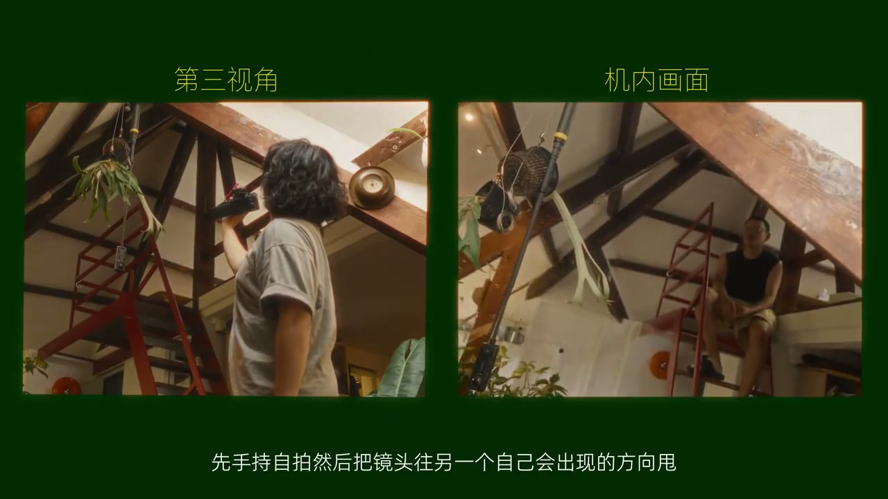
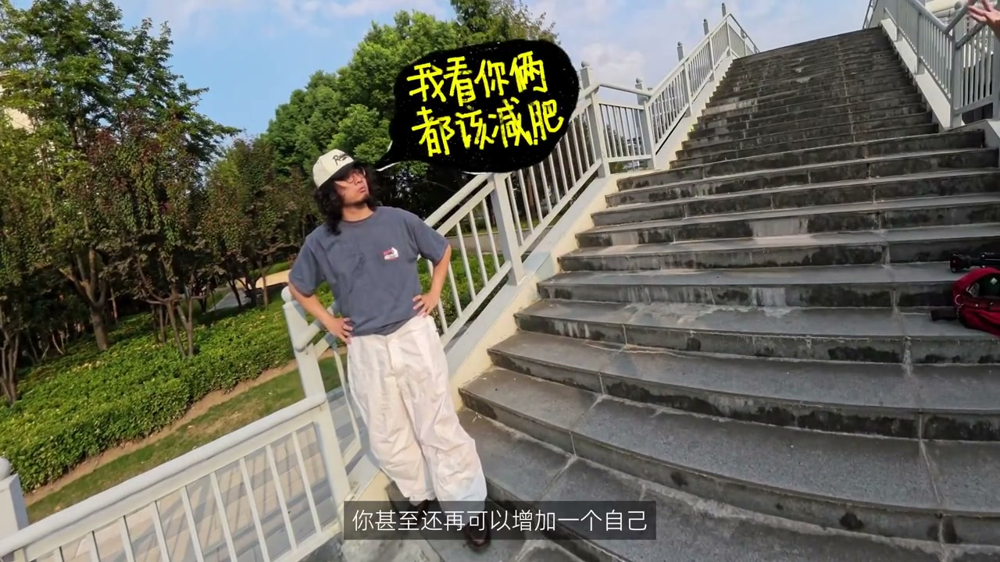
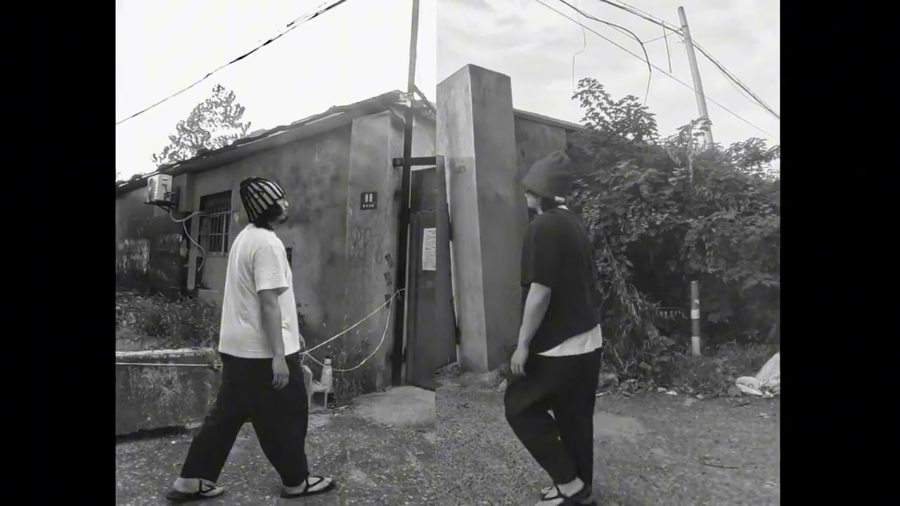
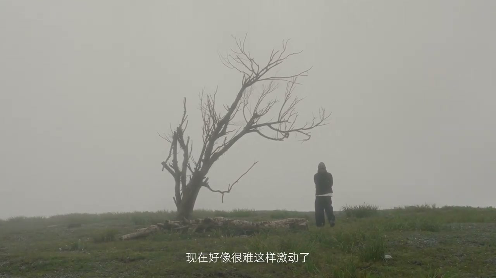

01
中文
每当拍视频没灵感的时候，我都愿意看看那些被用烂的技巧。
EN
When out of video inspiration, I look at the overused techniques.
表达提示overused tricks（被用烂的技巧）

Scene English · Vlog · 分身创意
Shoot Like This to Never Feel Alone in Your Vlog
🎧 语音讲解
Opening: whenever I run out of video inspi…
情境把用烂的技巧换角度重获新生。
每当拍视频没灵感的时候，我都愿意看看那些被用烂的技巧。
When out of video inspiration, I look at the overused techniques.
表达提示overused tricks（被用烂的技巧）
还记得之前分享过的分身自我对话，我有准备出一些新玩法。
Remember the clone self-dialogue? I've prepared new ways to play.
表达提示clone self-dialogue（分身自我对话）
overused tricks（被用烂的技巧

Method one · handheld whip-pan: the first …
情境手持甩镜拼接，或用全景相机独自完成。
把镜头往另一个自己出现的方向甩，然后把两张运动模糊的地方拼在一起。
Whip the lens toward the other you, then stitch the motion-blurred areas.
表达提示whip-pan stitch（甩镜拼接）
拥有一个会拍摄并且随时有空的朋友，其实是一个很难满足的条件。
A friend who shoots and is always free is a hard condition to meet.
表达提示hard condition（很难满足）
用全景相机拍，固定机位拍两遍，然后用后期剪辑做摇镜头。
With a 360 camera, shoot twice from a fixed spot and pan in post.
表达提示360 camera（全景相机）
whip-pan stitch（甩镜拼接
hard condition（很难满足

The advantage of post panning: this setup …
情境后期运镜保证每次运动一致。
后期控制运镜非常重要的，它可以保证每段画面的运动是完全一致的。
Post panning guarantees every shot's movement is perfectly identical.
表达提示identical motion（运动一致）
这意味着即便你加再多的分身，理论上都不会失误。
No matter how many clones you add, there's theoretically no failure.
表达提示no failure（不会失误）
让每种情绪画的不同的自己围成一圈，这种展现内心世界的桥段。
Different selves, each one emotion, ring around you—revealing the inner world.
表达提示inner world（内心世界）
identical motion（运动一致
no failure（不会失误

Method two · past and present self: descri…
情境全景相机拍过去与现在的自己合体。
无论怎么逃避，还是会跟过去的选择碰面。
No matter how I avoid it, I'll still meet the choices of the past.
表达提示meet the past（与过去碰面）
在电影中一般会用电动滑轨来拍，对于Vlog来说会比较麻烦。
Films use a motorized slider—bothersome for vlogs.
表达提示motorized slider（电动滑轨）
固定机位拍，然后一边保留一半，这会自动变成分屏。
Shoot from a fixed spot, keep one half each, and it becomes a split screen.
表达提示auto split-screen（自动分屏）
meet the past（与过去碰面
motorized slider（电动滑轨

Clone's practical scene: a very practical …
情境分身像局外人看自己，慢动作加强抽离感。
分身在Vlog的一个很实用的场景，是另一个你像局外人一样观看自己。
A practical clone scene is another you watching yourself like an outsider.
表达提示outsider view（局外人视角）
让其中一个自己变成慢动作，加强这种抽离出来的感觉。
Turn one self into slow motion to strengthen the detached feeling.
表达提示detached feel（抽离感）
升格慢动作不管分身，都可以给Vlog带来一种陌生感。
High-frame-rate slow motion, clones or not, brings an estranged feel.
表达提示estranged feel（陌生感）
outsider view（局外人视角
detached feel（抽离感

Why two episodes: why does an unoriginal c…
情境换个角度让用烂的技巧重新激动人心。
分身是我刚开始做视频的时候学会的第一个技巧。
Clones were the first trick I learned when starting to make videos.
表达提示first trick（第一个技巧）
那些对自己来说的新东西，慢慢都变成了用烂的技巧。
The things new to me slowly became overused tricks.
表达提示overused over time（慢慢用烂）
不断地想这些东西还能怎么用，其实也就是想让自己重新激动起来。
Keep asking what else they can do—to get myself excited again.
表达提示excited again（重新激动）
first trick（第一个技巧
overused over time（慢慢用烂
说手持甩镜
说全景相机
说后期运镜
说合体分屏
说慢动作抽离
别依赖随时有空的朋友。
后期运镜保证运动一致。
拍摄相遇过去自己的画面。
慢动作一个分身更有抽离感。
用烂的技巧换个角度又是新的。